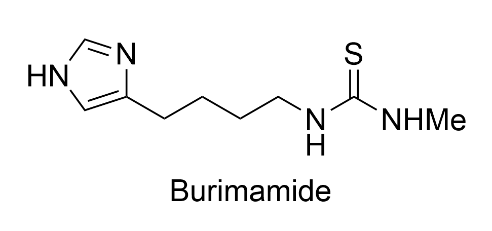
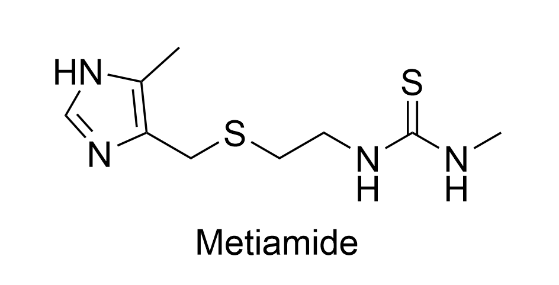
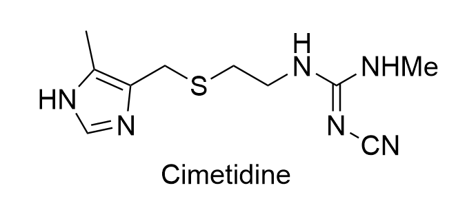
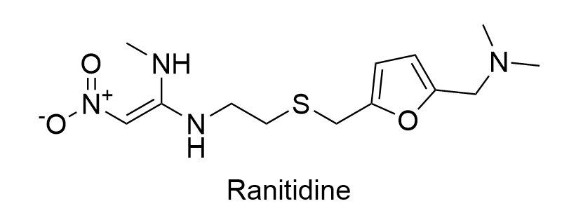

Drug Development Timeline
The journey from histamine to Cimetidine: James Black's masterpiece
Click a stage to zoom in for details. Click again to collapse.
1
~1970

2
1972
Proof of concept
Nα-Guanylhistamine⇦ Click to know more
Adding a guanidine group delivered a permanently charged tail that partially blocked the receptor.
- Acted as a partial agonist (pA2=3.9) [12], weakly stimulated acid secretion but not as strong as the effect of histamine does.
- Too weak for therapy but validated the H₂ antagonist hypothesis.

3
1972
First successful antagonist
Burimamide⇦ Click to know more
The alkyl chain was extended to 4-C and the thiourea group was N-methylated.
- 100× more active antagonist than Nα-Guanylhistamine [13].
- Although it was a successful antagonist, it had poor oral bioavailability.

4
1973
Potent but toxic
Metiamide⇦ Click to know more
A methyl group in side chain was replaced with a sulfur atom and a methyl group was added to the 4-position on imidazole ring.
- Developed to solve the oral bioavailability problems.
- 10× more potency than Burimamide.
- Clinical use revealed kidney toxicity and a rare but severe disease called agranulocytosis Decreased white blood cell count [14].

1976
Breakthrough
Cimetidine⇦ Click to know more
The N-methylated thiourea group was replaced with a cyanoguanidine group.
- Successfully replacing the toxic features of Metiamide while maintaining high potency.
- Was found to inhibit cytochrome P450 enzymes, leading to potential interactions with other medications [15].

6
1981
Next generation
Ranitidine
Swapped the imidazole ring for a furan ring and more.
- Discovered in 1976 by John Bradshaw (Glaxo).
- 4–10× more potency than Cimetidine [16].
